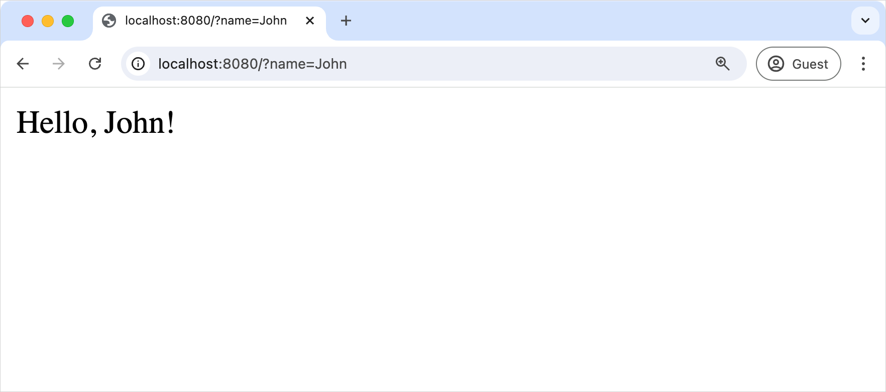

Create a new Spring Boot project with Kotlin by using the Project Wizard in IntelliJ IDEA Ultimate Edition:
In IntelliJ IDEA, select File | New | Project.
In the panel on the left, select New Project | Spring Boot.
Specify the following fields and options in the Project Wizard window:
Name: demo
Language: Kotlin
Type: Gradle - Kotlin
Package name: demo
JDK: Java JDK
Java: 17
Ensure that you have specified all the fields and click Next.
Select the following dependencies that will be required for the tutorial:
Web | Spring Web
SQL | Spring Data JDBC
SQL | H2 Database
Click Create to generate and set up the project.
After this, you can observe the following structure in the Project view:
The generated Gradle project corresponds to the Maven's standard directory layout:
There are packages and classes under the main/kotlin folder that belong to the application.
The entry point to the application is the main() method of the DemoApplication.kt file.
Explore the project Gradle build file
Open the build.gradle.kts file: it is the Gradle Kotlin build script, which contains a list of the dependencies required for the application.
The Gradle file is standard for Spring Boot, but it also contains necessary Kotlin dependencies, including the kotlin-spring Gradle plugin – kotlin("plugin.spring").
Here is the full script with the explanation of all parts and dependencies:
// build.gradle.kts
plugins {
kotlin("jvm") version "1.9.24" // The version of Kotlin to use
kotlin("plugin.spring") version "1.9.24" // The Kotlin Spring plugin
id("org.springframework.boot") version "3.3.4"
id("io.spring.dependency-management") version "1.1.6"
}
group = "com.example"
version = "0.0.1-SNAPSHOT"
java {
toolchain {
languageVersion = JavaLanguageVersion.of(17)
}
}
repositories {
mavenCentral()
}
dependencies {
implementation("org.springframework.boot:spring-boot-starter-data-jdbc")
implementation("org.springframework.boot:spring-boot-starter-web")
implementation("com.fasterxml.jackson.module:jackson-module-kotlin") // Jackson extensions for Kotlin for working with JSON
implementation("org.jetbrains.kotlin:kotlin-reflect") // Kotlin reflection library, required for working with Spring
runtimeOnly("com.h2database:h2")
testImplementation("org.springframework.boot:spring-boot-starter-test")
testImplementation("org.jetbrains.kotlin:kotlin-test-junit5")
testRuntimeOnly("org.junit.platform:junit-platform-launcher")
}
kotlin {
compilerOptions {
freeCompilerArgs.addAll("-Xjsr305=strict") // `-Xjsr305=strict` enables the strict mode for JSR-305 annotations
}
}
tasks.withType<Test> {
useJUnitPlatform()
}
As you can see, there are a few Kotlin-related artifacts added to the Gradle build file:
In the plugins block, there are two Kotlin artifacts:
kotlin("jvm") – the plugin defines the version of Kotlin to be used in the project
kotlin("plugin.spring") – Kotlin Spring compiler plugin for adding the open modifier to Kotlin classes in order to make them compatible with Spring Framework features
In the dependencies block, a few Kotlin-related modules listed:
com.fasterxml.jackson.module:jackson-module-kotlin – the module adds support for serialization and deserialization of Kotlin classes and data classes
After the dependencies section, you can see the kotlin plugin configuration block. This is where you can add extra arguments to the compiler to enable or disable various language features.
Explore the generated Spring Boot application
Open the DemoApplication.kt file:
// DemoApplication.kt
package demo
import org.springframework.boot.autoconfigure.SpringBootApplication
import org.springframework.boot.runApplication
@SpringBootApplication
class DemoApplication
fun main(args: Array<String>) {
runApplication<DemoApplication>(*args)
}
Declaring classes – class DemoApplication
Right after package declaration and import statements you can see the first class declaration, class DemoApplication.
In Kotlin, if a class doesn't include any members (properties or functions), you can omit the class body ({}) for good.
The main() function is the entry point to the application.
It is declared as a top-level function outside the DemoApplication class. The main() function invokes the Spring's runApplication(*args) function to start the application with the Spring Framework.
Variable arguments – args: Array<String>
If you check the declaration of the runApplication() function, you will see that the parameter of the function is marked with vararg modifier: vararg args: String. This means that you can pass a variable number of String arguments to the function.
The spread operator – (*args)
The args is a parameter to the main() function declared as an array of Strings. Since there is an array of strings, and you want to pass its content to the function, use the spread operator (prefix the array with a star sign *).
Create a controller
The application is ready to run, but let's update its logic first.
In the Spring application, a controller is used to handle the web requests. In the same package with DemoApplication.kt file, create the MessageController.kt file with the MessageController class as follows:
You need to tell Spring that MessageController is a REST Controller, so you should mark it with the @RestController annotation.
This annotation means this class will be picked up by the component scan because it's in the same package as our DemoApplication class.
@GetMapping annotation
@GetMapping marks the functions of the REST controller that implement the endpoints corresponding to HTTP GET calls:
@GetMapping("/")
fun index(@RequestParam("name") name: String) = "Hello, $name!"
@RequestParam annotation
The function parameter name is marked with @RequestParam annotation. This annotation indicates that a method parameter should be bound to a web request parameter.
Hence, if you access the application at the root and supply a request parameter called "name", like /?name=<your-value>, the parameter value will be used as an argument for invoking the index() function.
Single-expression functions – index()
Since the index() function contains only one statement you can declare it as a single-expression function.
This means the curly braces can be omitted and the body is specified after the equals sign =.
Type inference for function return types
The index() function does not declare the return type explicitly. Instead, the compiler infers the return type by looking at the result of the statement on the right-hand side from the equals sign =.
The type of Hello, $name! expression is String, hence the return type of the function is also String.
String templates – $name
Hello, $name! expression is called a String template in Kotlin.
String templates are String literals that contain embedded expressions.
This is a convenient replacement for String concatenation operations.
Run the application
The Spring application is now ready to run:
Click the green Run icon in the gutter beside the main() method:
This starts the local server on your computer.
Once the application starts, open the following URL:
http://localhost:8080?name=John
You should see "Hello, John!" printed as a response:

Next step
In the next part of the tutorial, you'll learn about Kotlin data classes and how you can use them in your application.